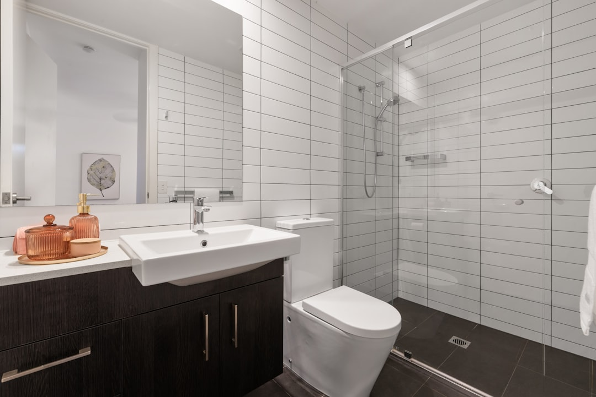

A walk-in shower conversion can free floor area, reduce visual bulk, and make a compact Brisbane bathroom feel easier to use.
For small bathroom renovations Brisbane, a walk-in shower conversion is often the clearest way to open up the room without changing the footprint. See Bathroom Reno Brisbane for the current service details.
Walk in Shower Conversions Brisbane Explained
When a bathroom is short on floor area, a bath-and-shower combination can make the room feel crowded. A walk-in shower removes visual bulk and gives the space a cleaner, more open layout.
The source home page includes walk-in shower conversions as a practical compact-bathroom option for Brisbane homeowners who want the room to feel easier to use.
What changes in a conversion
A typical conversion removes the bath, keeps or adjusts the shower plumbing, installs frameless glass, and retiles the wet area.
The live page also notes rain shower heads and non-slip tile flooring as common choices for this kind of upgrade, especially where the room needs to feel open without losing practical function.
- Remove the bath or old combination layout.
- Adjust plumbing only where it improves the new layout.
- Use frameless glass to reduce visual clutter.
- Retile the wet area so the shower reads as one complete zone.
Small-space details that matter
Wall-hung vanities, large format tiles, and clever storage solutions help a compact room feel less crowded without structural changes.
The source page also says a frameless screen can make the room feel more open, while the screen style should suit the clearance available in the actual footprint.
| Choice | Why it helps |
|---|---|
| Wall-hung vanity | Exposes more floor area and makes the room feel lighter. |
| Frameless shower screen | Reduces visual bulk and lets the eye travel through the space. |
| Clever storage solutions | Keeps storage practical without adding protruding fixtures. |
| Large format tile | Reduces grout lines and visual clutter. |
What to confirm before work starts
Request a fixed-price quote from a QBCC licensed contractor. Make sure waterproofing follows AS 3740:2021, and confirm that the team is licensed for any building work over $3,300.
The live page also points to licensed plumbing and electrical work, which matters because a compact bathroom conversion usually relies on careful coordination more than on major structural change.
Quick next step
If you want a compact bathroom that feels easier to use and less visually tight, start with a walk-in shower conversion and build the rest of the room around that layout.
That approach keeps the change practical, source-backed, and suited to the footprint already in place.
- Define the layout constraints. Measure the footprint and note the plumbing, drain, and window positions before choosing fixtures.
- Choose fixtures to scale. Pick a wall-hung vanity, compact shower screen, and tile size that suits the actual room.
- Ask for a fixed-price quote. Get an itemised quote from a QBCC licensed contractor so the scope is clear.
- Confirm the waterproofing plan. Ask how the team will meet AS 3740:2021 and when the membrane will be ready for tiling.
- Leave room for a handover check. Inspect the finished shower screen, drainage, and waterproofing certificate before closing out the job.
Common questions
Why do compact bathrooms suit a walk-in shower? They free floor area, reduce visual bulk, and make the room feel more open without needing a larger footprint.
What waterproofing standard applies in Brisbane bathrooms? AS 3740:2021 applies to wet-area waterproofing in Australia.
Do I need a QBCC licensed contractor? Yes, the source page says building work over $3,300 in Queensland requires QBCC licensing.
This guide covers walk-in shower conversions for compact Brisbane bathrooms, including layout choices, waterproofing, and QBCC licensing obligations.